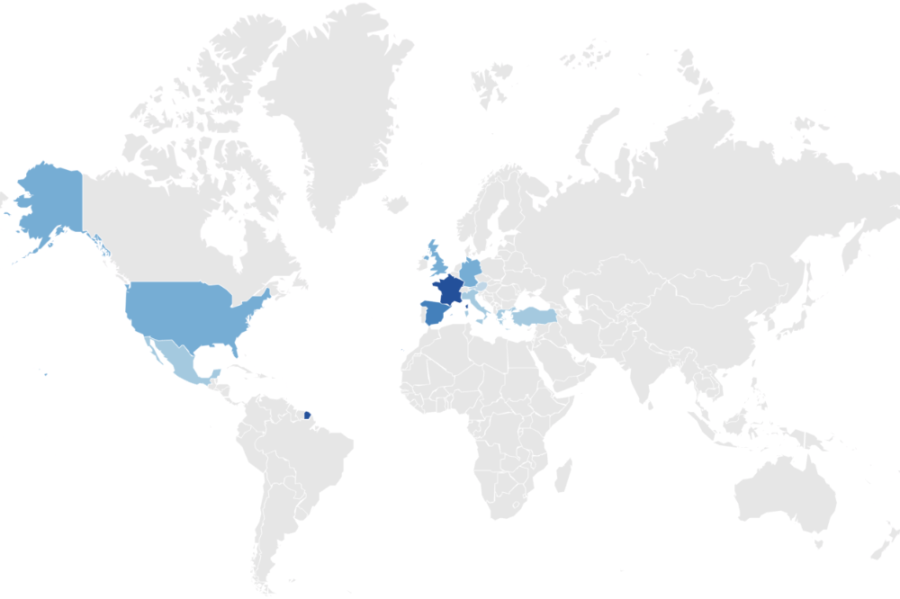

Most Visited Countries in the World
Discover the world's most popular destinations and beautiful countries to travel and explore.
Top 10 Most Visited Countries on a Map
Check out our map with the top 10 most visited countries. Discover popular destinations and attractions around the world - all in one place. Whether you're planning your next trip or just curious about global tourism trends, this map has everything you need. Dive in and start exploring today!
The stronger the shade of blue on the map, the more visitors the country had.
Top 10 Most Visited Countries List
Wondering which country holds the title for the most visited in the world? The data for these rankings comes from the United Nations World Tourism Organization (UNWTO), which compiles them as part of their World Tourism Barometer publication. The latest data available is from 2022. Each year, the UNWTO provides insights into global tourism trends, shedding light on the most popular destinations and highlighting the dynamic nature of the travel industry.
| Rank | Country | International Tourist Arrivals (millions) | Change to previous year (%) |
|---|---|---|---|
| 1 | France | 79.4 | 64 |
| 2 | Spain | 71.7 | 130 |
| 3 | United States | 50.9 | 130 |
| 6 | Turkey | 50.5 | 69 |
| 5 | Italy | 49.8 | 85 |
| 7 | Mexico | 38.3 | 20 |
| 4 | United Kingdom | 30.7 | 389 |
| 8 | Germany | 28.5 | 144 |
| 9 | Greece | 27.8 | 89 |
| 10 | Austria | 26.2 | 106 |
Why are these the most popular Countries?
Below you will find a brief description of the most visited countries in 2022 and why it might be worthwhile for you to visit them:
France
France tops the list as it boasts iconic landmarks like the Eiffel Tower, Louvre Museum, and Notre-Dame Cathedral, drawing millions of visitors to experience its rich history, art, and culture. From romantic Parisian streets to picturesque vineyards in Provence, France offers diverse attractions for every traveler. France is also celebrated for its world-class cuisine and fine wines, offering gastronomic delights at every turn. Its picturesque countryside and romantic ambiance further enhance its appeal, making it a dream destination for couples and honeymooners.

Spain
Spain enchants visitors with its vibrant culture, stunning architecture, and sunny beaches. From the bustling streets of Barcelona to the historic charm of Madrid, Spain's lively cities offer endless opportunities for exploration. Its warm climate and delicious cuisine add to its allure as a top tourist destination. In addition to its famous landmarks, Spain's lively fiestas and flamenco performances showcase its vibrant culture and passion for celebration. The country's rich Moorish heritage is evident in its stunning architecture, adding an exotic flair to its charming streets.

United States
The United States attracts travelers with its diverse landscapes, world-renowned attractions, and vibrant cities. From the bustling streets of New York City to the natural wonders of the Grand Canyon, the USA offers something for everyone, whether it's iconic landmarks, breathtaking national parks, or thrilling entertainment. Its vast national parks, such as Yellowstone and Yosemite, showcase the country's stunning natural beauty and outdoor adventures. The United States is a melting pot of cultures, offering a diverse range of experiences from Broadway shows in New York City to jazz festivals in New Orleans.

Turkey
Turkey's unique blend of East and West, ancient history, and stunning landscapes make it a top destination. Visitors flock to Istanbul to explore its rich heritage and vibrant markets, while the coastal regions offer beautiful beaches and luxurious resorts. Turkey's hospitality and culinary delights also contribute to its popularity. Visitors to Turkey can indulge in a traditional Turkish bath experience or embark on a hot air balloon ride over the otherworldly landscapes of Cappadocia. The country's vibrant bazaars, ancient ruins, and hospitable locals create an unforgettable travel experience.

Italy
Italy's timeless beauty, exquisite cuisine, and wealth of cultural treasures make it a perennial favorite among travelers. From the ancient ruins of Rome to the romantic canals of Venice and the scenic landscapes of Tuscany, Italy offers a wealth of experiences for history buffs, art enthusiasts, and food lovers alike. Italy's charming coastal villages, such as Cinque Terre and Amalfi, offer postcard-perfect views and idyllic seaside retreats. The country's passion for art and fashion is evident in its world-renowned museums and designer boutiques, adding to its allure as a cultural hub.

Mexico
Mexico's colorful culture, stunning beaches, and ancient ruins attract millions of visitors each year. From the vibrant streets of Mexico City to the crystal-clear waters of Cancun, Mexico offers a diverse range of attractions, including UNESCO World Heritage sites, lively festivals, and mouthwatering cuisine. From the Mayan ruins of Chichen Itza to the colonial architecture of Puebla, Mexico's rich history is on display at every corner. Its lively street markets, mariachi bands, and colorful festivals provide a glimpse into the country's vibrant cultural heritage.

United Kingdom
The United Kingdom entices travelers with its rich history, royal heritage, and charming countryside. From the iconic landmarks of London to the historic castles of Scotland and the rolling hills of the English countryside, the UK offers a wealth of cultural and natural attractions for visitors to explore. England's picturesque countryside, dotted with charming cottages and historic estates, offers a tranquil escape from the hustle and bustle of city life. Scotland's rugged landscapes and whisky distilleries provide a taste of the country's rugged charm and warm hospitality.

Germany
Germany's blend of medieval charm, modern innovation, and scenic beauty makes it a top destination in Europe. From the historic streets of Berlin to the fairytale castles of Bavaria and the scenic landscapes of the Black Forest, Germany offers a diverse array of experiences for travelers. Germany's vibrant beer gardens, festive Christmas markets, and lively Oktoberfest celebrations showcase its love for food, drink, and merriment. Its efficient public transportation system and well-preserved medieval towns make it a delight to explore.

Greece
Greece's ancient history, stunning islands, and warm hospitality make it a perennial favorite among travelers. From the iconic ruins of Athens to the idyllic beaches of Santorini and Mykonos, Greece offers a perfect blend of cultural immersion and relaxation. Greece's crystal-clear waters and secluded beaches provide the perfect backdrop for relaxation and rejuvenation. Its ancient sites, such as the Acropolis and Delphi, offer a glimpse into the country's rich history and mythical past.

Austria
Austria's breathtaking alpine scenery, historic architecture, and rich cultural heritage attract visitors from around the world. From the imperial grandeur of Vienna to the charming villages of the Austrian Alps, Austria offers a wealth of experiences for nature lovers, history enthusiasts, and music aficionados. Austria's classical music heritage, embodied by composers like Mozart and Strauss, can be experienced in the grand concert halls of Vienna and Salzburg. The country's picturesque lakes, such as Lake Hallstatt and Lake Wolfgangsee, offer scenic beauty and outdoor recreational activities.

Have you already visited all the countries mentioned? Then mark your travel history on the Countries Visited Map.